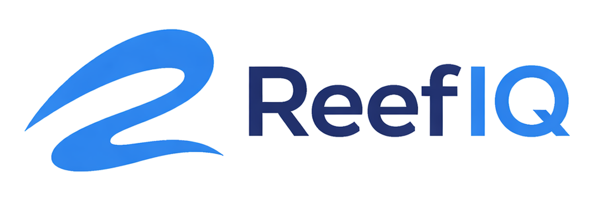

Intelligent Reefing
Control your equipment, monitor water chemistry, analyze reports, track livestock, and get intelligent reef guidance — all in one app.
What is ReefIQ?
ReefIQ is a mobile app for reef aquarium hobbyists. It brings your entire reef ecosystem into one workspace — device control, water parameter monitoring, ICP report analysis, livestock and journal tracking, maintenance scheduling, and an AI-powered reef assistant that understands your specific setup.
Connect your devices over local Wi-Fi for real-time control and monitoring. Sign in to sync your tank profiles, parameter history, and assistant conversations across sessions. The ReefIQ Assistant provides personalized guidance based on your actual tank data and water chemistry.
Available on iOS and Android.
Features
Device Control
Real-time control of ReefIQ devices over your local network. Speed, angle, motion profiles, and multi-zone flow programming.
Parameter Dashboard
Live Apex probe readings and manual test logs on one dashboard. Daily snapshots, history charts, and health-range indicators.
Reef Assistant
Text and voice conversations with an AI that knows your tank — livestock, parameters, equipment, and history.
ICP Report Analysis
Upload ICP water analysis PDFs. AI extracts parameters, flags anomalies, and provides actionable recommendations.
Health Reports
AI-generated tank health assessments based on your parameters, livestock, and journal history.
Livestock Tracking
Track coral, fish, and invertebrates. Record species, placement, health notes, and date added.
Journal & Correlations
Log dosing, water changes, and observations. AI identifies correlations between actions and parameter changes.
Maintenance Scheduler
Schedule recurring tasks with push notification reminders. Track completion history and stay on top of maintenance.
Parameter Alerts
Set thresholds for any parameter. Get push notifications when values go out of range.
Over-the-Air Updates
Update device firmware directly from the app. Verified integrity, one-tap install.
Hardware Ecosystem
- ReefIQ Flo — Programmable flow oscillator with stepper motor, magnetic encoder feedback, and multi-zone sweep profiles
- ReefIQ Specto — 14-channel spectral light meter for PAR, CCT, and spectrum analysis
- ReefIQ Cora — Touchscreen hub with multi-tank dashboard, device management, and voice assistant
Integrations
- Neptune Apex — Live probe readings (pH, ORP, temperature, salinity, alkalinity, calcium, magnesium, nitrate, phosphate) with automatic daily snapshots over your local network
- OpenAI — Powers the Reef Assistant (text and voice), ICP analysis, health reports, and journal correlations
- Firebase — Secure cloud sync for tank data, parameters, assistant history, and push notifications